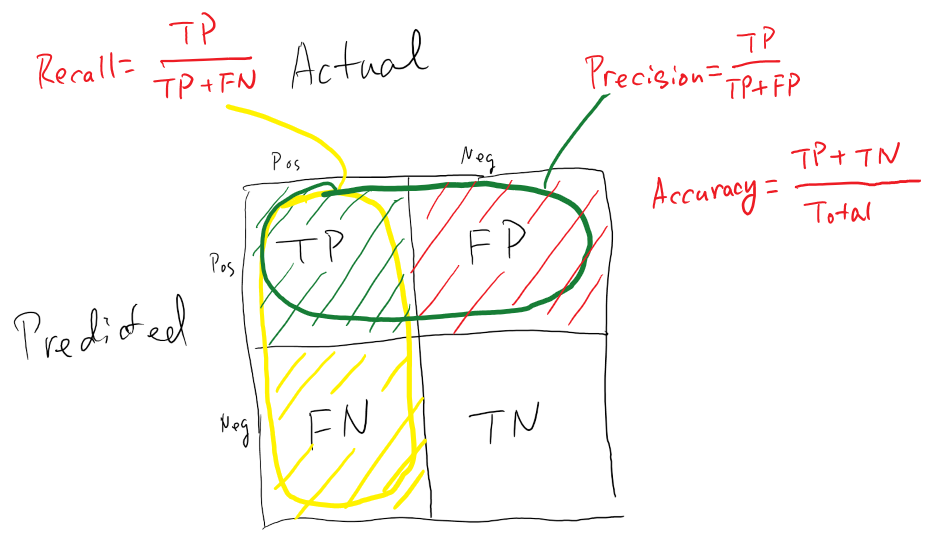
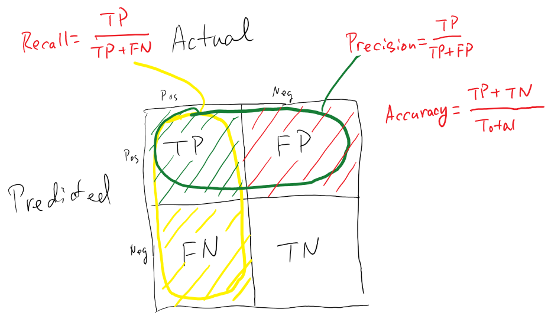
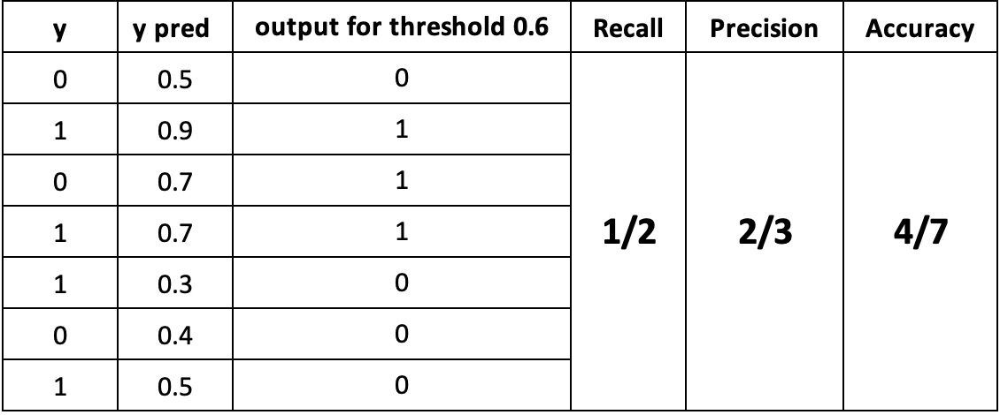

AUROC、AUPRC
基础知识
在机器学习中，性能测量是一项基本任务。因此，当涉及到分类问题时，我们可以依靠 AUC - ROC 曲线。当我们需要检查或可视化多类分类问题的性能时，我们使用 AUC（曲线下区域）ROC （接收器操作特征） 曲线。它是检查任何分类模型绩效的最重要评价指标之一。它也被写成AUROC（接收机操作特征下的区域）)
混淆矩阵：
 

TP: True Positive，预测为正，且预测正确
TN：True Negative，预测为负，且预测正确
FP：False Positive, 预测为正，但预测错误
FN：False Negative，预测为负，但预测错误

计算一些指标 Recall，Precision，Accuracy
$Recall = \frac{TP}{TP+FN}$：从所有实际中为正的类，有多少预测正确，Recall应该尽可能高
$Precision=\frac{TP}{TP+FP}$：从我们预测为正的类中，有多少是正确的，也应该尽可能高
$Accuracy=\frac{TP+TN}{total}$：预测正确的比例
$F-measure=\frac{2 * Recall * Precision}{Recall+Precision}$：很难比较两种精度低、召回率高的车型，反之亦然。因此，为了使它们具有可比性，我们使用 F 分数。F-score 有助于同时测量召回和精度。它使用谐波平均值来代替算术平均值，通过惩罚极端值更多。
AUROC
AUC - ROC 曲线是针对不同阈值设置下的分类问题的性能测量。ROC 是一个概率曲线，AUC 表示可分离性的程度或度量。它告诉模型能够区分不同类别的程度。AUC 越高，模型就越能预测 0 类为 0，1 类为 1。打个比方，AUC 越高，模型就越能区分疾病患者和无疾病患者。
ROC 曲线以 TPR 与 FPR 绘制，其中 TPR 位于 y 轴上，FPR 在 x 轴上

$TPR=Recall=Sensitivity=\frac{TP}{TP+FN}$
$Specificity=\frac{TN}{TN+FP}$
$FPR=1-Specificity=\frac{FP}{TN+FP}$


$Sensitivity$与$Specificity$反比，所以TPR与FPR成正比
AUPRC（The area under the precision-recall curve）
AUPRC 计算为 PR 曲线下的区域。公关曲线显示不同决策阈值之间的$Precision$和$Recall$之间的权衡。
PR曲线x轴是Recall，y轴是Precision
参考资料：
Measuring Performance: AUPRC and Average Precision
Area Under the Precision-Recall Curve: Point Estimates and Confidence Intervals
Measuring Performance: AUC (AUROC)
Understanding Confusion Matrix
ROC Graphs: Notes and Practical Considerations for Researchers